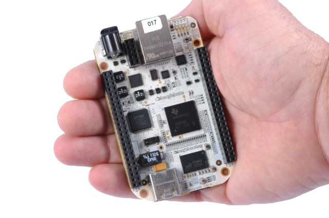
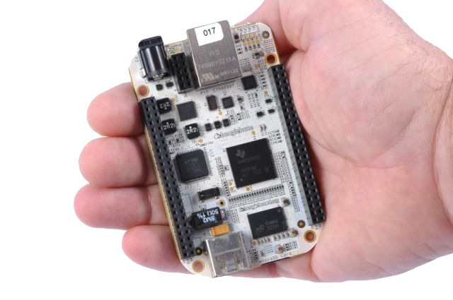

Getting started with your new BeagleBone
This is the quick-start guide. For a more detailed background and to get
the latest demonstration image, see the full presentation available at:
http://beagleboard.org/beagleboard101.
Step #1: Install the USB-to-serial device driver
Your BeagleBone comes with a built-in USB-to-serial interface adapter. To
enable it, you'll need to install the Windows, Mac OSX or Linux driver.
Step #2: Install the USB-to-Ethernet device driver
The Linux distribution running on your BeagleBone supports emulating a USB-to-Ethernet
device such that you can access your BeagleBone with networking protocols, such as web
browsing.
- Do the driver installation
- Windows:
- Mac OS X:
- Linux:
- No driver installation should be required, simply configure the adapter for DHCP.
- Eject the BEAGLE_BONE USB drive. The USB Ethernet gadget will automatically start.
- Configure the adapter that appears for DHCP.
Step #3: Navigate to your BeagleBone's web interface
The Linux distribution running on your BeagleBone is configured to start a handful
of web servers upon boot. This is the easiest way to get explore and program your
BeagleBone if you are not already experienced with Linux.
To-do items for next release
- Verify licensing and redistribution rights
- Add g_ether service (with fixed MAC addresses) on g_mass_storage ejection
- Add DHCP server to avoid network configuration when using g_ether
- Provide list of supported browsers and versions
- Fix-up Mac drivers to install cleanly without manual hacking
- Test and improve Windows driver installation experience based on feedback
- Add graphics and/or videos where appropriate
- Clean up documents folder and give pointers to the content
- Add Gate One
- Add links in Matrix to Gate One and Cloud9 IDE
- Add Ethernet IP address to a file
- Add Cloud9 node.js and C examples
- Add BeagleBoard101 presentation with dynamic board status to port 80 with new server and start it
Document version: 0.3